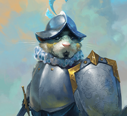

Trait: Guinecean, Shadow
Slot: Major
Movement Speed Damage Bonus: +5%
Movement Speed: Stealth: +5%
Covers the targeted area with caltrops for 15 seconds, reducing Piercing Mitigation by 20% and Slowing.
Tends to your wounds, and recover 375 maximum Health up to 6 times over 15 seconds as long as Stealth is maintained.
Trait: Frostweaver, Guinecean, Justice, Battle
Slot: Major
Anti Critical Strike: +3%
Health: +500
Tends to your wounds healing for 500 three times over six seconds. This ability does not scale with support power.
Fortifies group members and you with otherworldly strenght increasing their Attack Power by 75 while you maintain the effect.
Trait: Guinecean, Shadow, Fire, Storm
Slot: Minor
Critical Strike: +2%
Increases your Damage Bonus by 10% while also increasing the damage you take by 10%.
Trait: Guinecean
Slot: Minor
Stealth: +15
Excavates a path directly ahead of you, ignoring walls and some types of objects
in your path.
You cannot perform a successful Tunnel if it will place you inside a Building
or Rock.